Need Some Help?
If you have a question about DAW Remote, have a look at the Frequently Asked Questions below.
To send feedback of DAW Remote, go to DAW Remote page
QHow can I connect DAW Remote to my MAC?
Please follow these steps to setup your MAC.
- 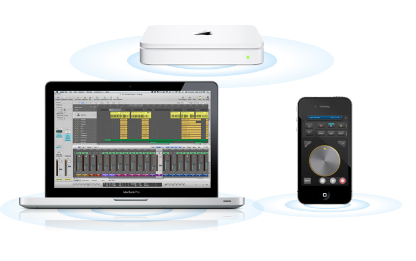
Please make sure that your DAW Remote and your MAC in the same WIFI network so that they can find each other over apple bonjour network.
-
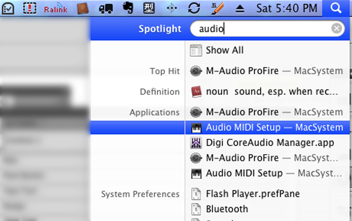
Launch “Audio MIDI Setup”.
-
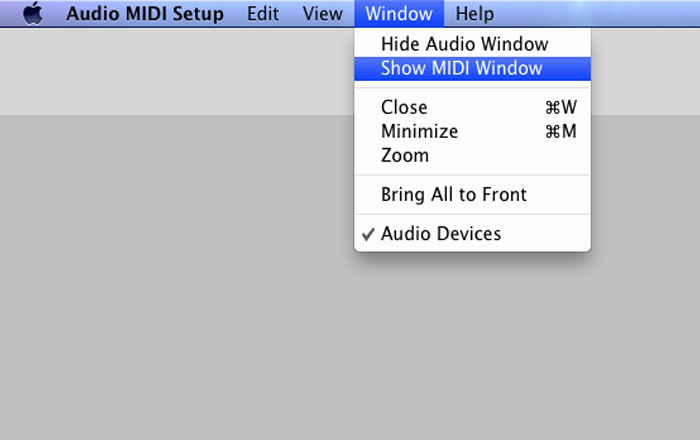
Choose “Show MIDI Window”.
-
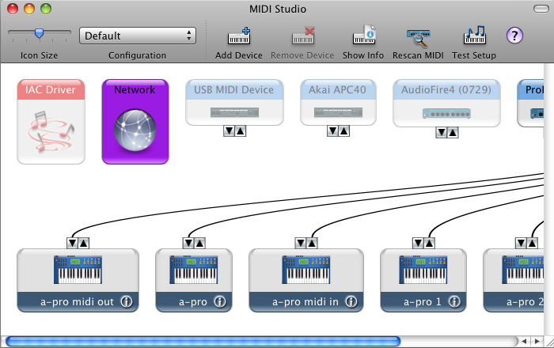
In MIDI Window, double click “Network” to open “MIDI Network Setup” panel.
-
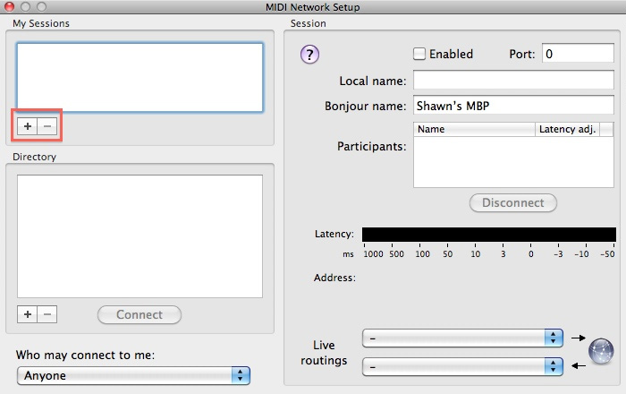
In “MIDI Network Setup”, click + in “My Sessions”. If it already has session, then you can ignore this step.
-
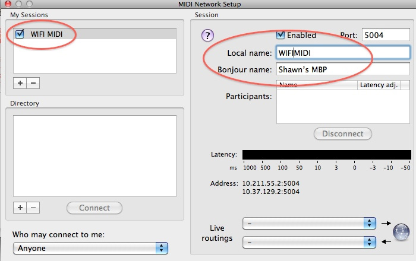
Choose a Local name and Bonjour name whatever you like and make sure session is enabled. Local name will apparent in your DAW softwares such as Apple Logic, and Bonjour name will show in your iPhone.
-
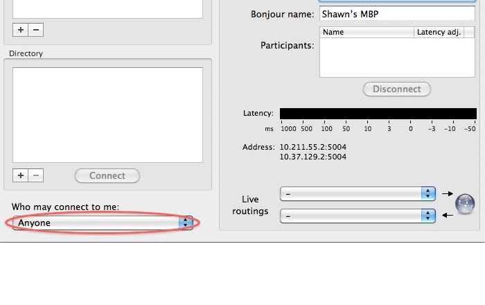
Make sure that “Who may connect to me” set to “Anyone”.
-
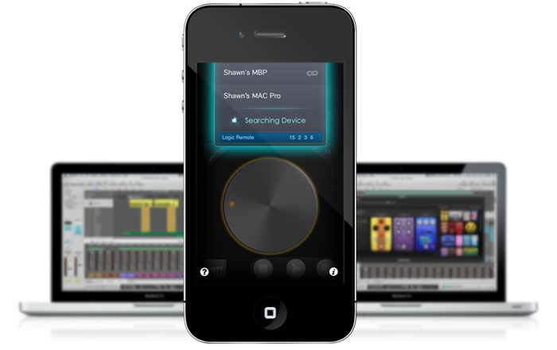
Turn on your iPhone and launch DAW Remote. you may see your iPhone in your Directory, or you may see your MAC on your DAW Remote.
QHow to setup DAW Remote in Apple Logic
-
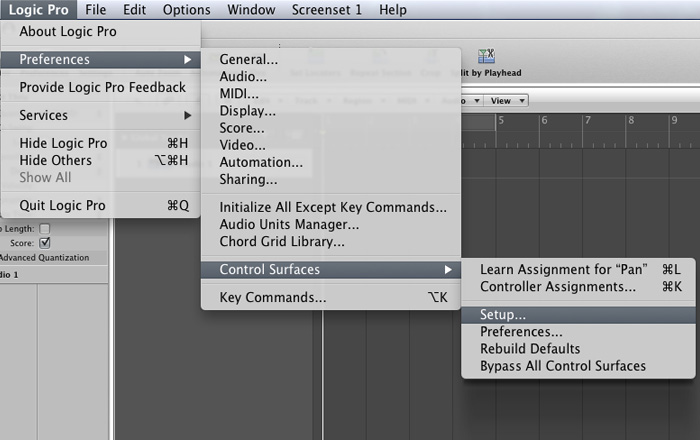
Launch Apple Logic, select Logic Pro -> Preferences -> Control Surfaces -> Setup...
-
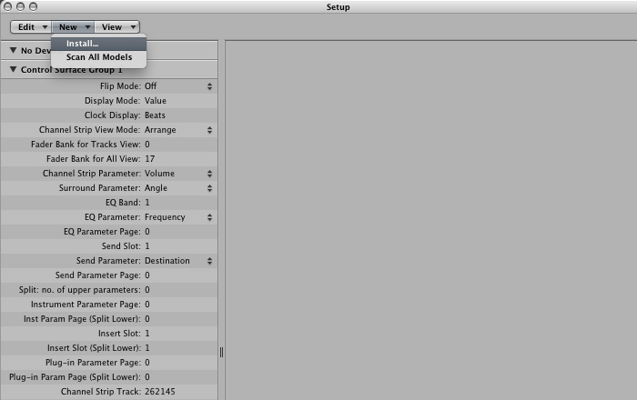
In Setup window, select New -> Install...
-
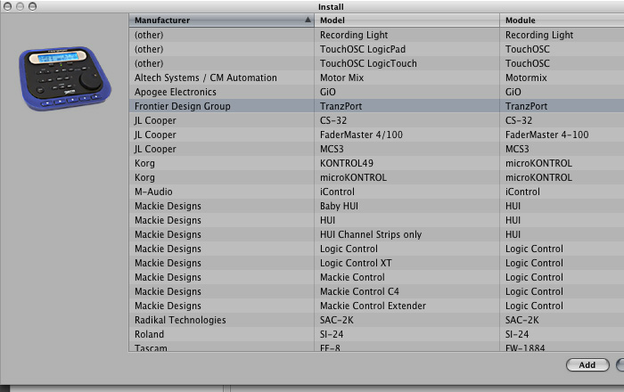
In Install window, find and add TranzPort
-
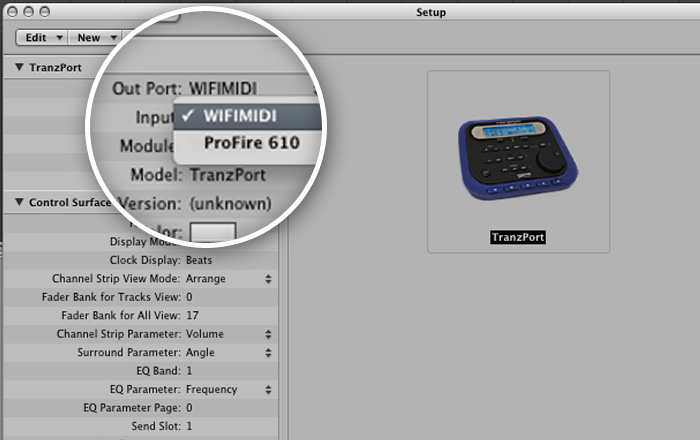
Back to Setup window, select TranzPort Input and Out Port to which you've chosen the local name in MIDI Network Setup panel.
QI've got "Connection Lost" problem
Please make sure to set Who may connect to me to Anyone in Network MIDI Setup panel.
QI've followed the instructions, but still have "Connection Lost" problem
You may turn off security settings in WIFI Router and try it again.(Because some routers may block unknown network protocols.)
If the problem is still remained. You could try it in Computer-to-Computer mode. Here are steps.
-
Make sure that your MIDI Network Session is turned on.
-
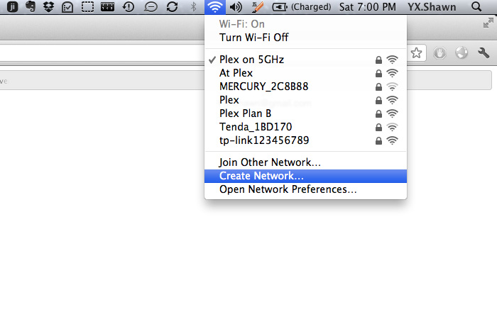
Turn on you WI-FI, and select Create Network...
-
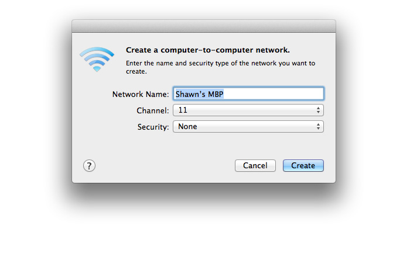
Choose a name for network. Turn on your iPhone, and connect to your computer network just created over WIFI. Launch DAW Remote and test is again.